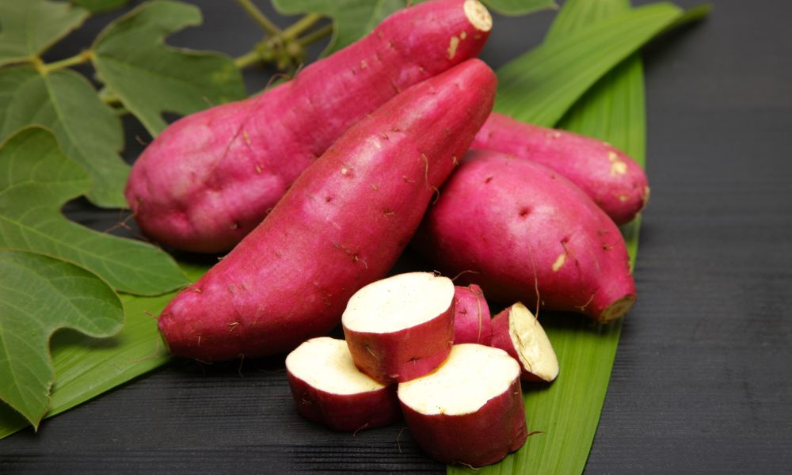
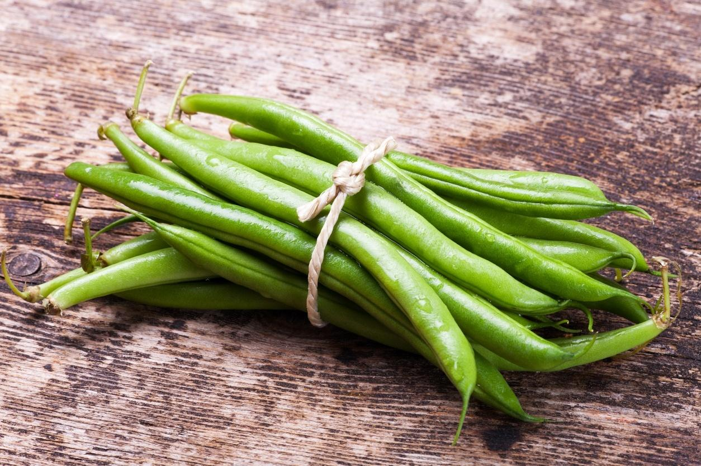

Legumes 🥦🥔🧄🧅🥕🌶🥒
Legumes das melhores qualidades! Mercadorias trazidas todos os dias
Abobora - 4.20kg
Alho - 5.00 100 gramas
Batata - 6.40kg
Batata doce - 5.60kg

Cebola - 4.00kg
Cenoura - 7.00kg
Chuchu - 7.8kg
Pepino - 6.50kg
Pimentão - 10.50kg
Tomate - 14.00kg
Vagem - 24.00kg

Receitas 👩‍🍳👨‍🍳
Quebra e manda na cozinha meus manos!
Suco de Abacaxi com Hortelã
Pra você dar uns gole no fim de semana
- 1 abacaxi descascado e picado
- 10 folhas de hortelã
- 500ml de água gelada
- Açúcar ou mel a gosto
Bata tudo no liquidificador, coe se desejar e sirva com gelo!
Pure de batata doce
Pra comer naquele friozinho ta ligado né
- 500g de batata doce cozida
- 2 colheres de manteiga
- 1/2 xÃcara de leite
- Sal a gosto
Amasse a batata, misture os ingredientes e manda pra dentro!
Salada de manga com pepino e limão
Salada de verão, climinha tropical
- 1 manga madura em cubos
- 1/2 pimentão vermelho em tiras finas
- 1 colher de sopa de suco de limão
- Sal e azeite a gosto
Misture tudo e sirva como entrada ou acompanhamento.
Doce de Goiaba caseiro
Pra adocicar a vida do sofredor
- 1kg de goiaba madura
- 500g de açúcar
- Suco de 1 limão
Cozinhe tudo até formar uma massa espessa. Armazene em potes esterilizados.
------------------------------------------------------------------------------------------------------